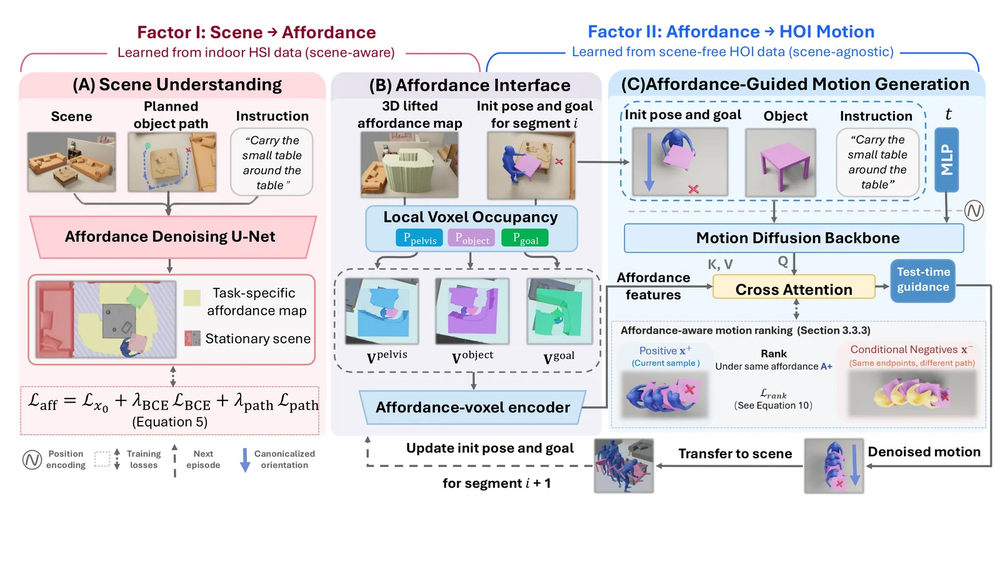
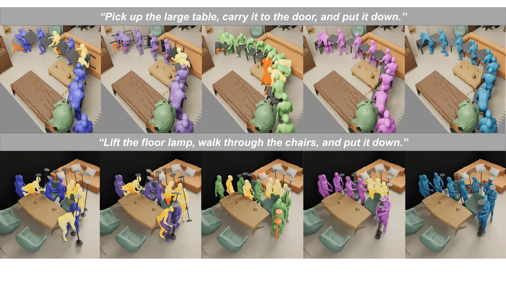
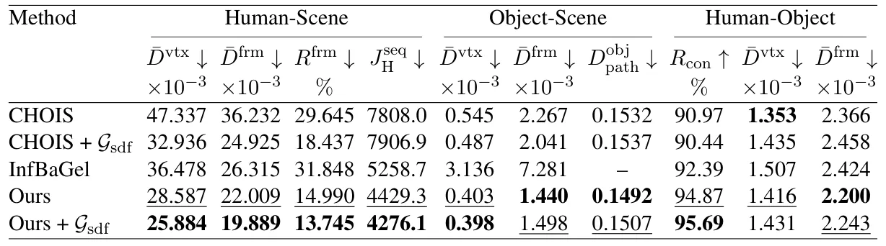

O problema de colocar humanos e objetos em cenas reais
Gerar movimento humano realista já é difícil. Gerar movimento de um humano manipulando um objeto — pegando uma caixa, empurrando uma cadeira — é mais difícil ainda. Mas gerar esse movimento dentro de uma sala cheia de móveis, sem que a pessoa atravesse paredes ou a caixa passe pelo sofá, é um problema que combina física, geometria e entendimento de tarefas.
Modelos generativos recentes conseguem sintetizar interações humano-objeto (HOI, de human-object interaction) com qualidade impressionante quando treinados em ambientes vazios ou simplificados. O desafio aparece quando você precisa adaptar essas interações a cenas 3D complexas: o humano precisa se aproximar do objeto sem colidir com móveis, e o objeto precisa se mover por regiões livres até o destino final.
A raiz do problema está nos dados. Datasets de humanos em cenas capturam bem como as pessoas se movem em ambientes reais, evitando obstáculos. Datasets de interações humano-objeto capturam a dinâmica fina de contato e manipulação. Mas dados que combinam humanos, objetos e cenas complexas — com diversidade de movimentos, geometrias de objetos e layouts — são raros e caros de coletar.
Métodos anteriores tentaram preencher essa lacuna de várias formas: alguns usam waypoints de objeto ou refinamento de trajetória para respeitar a cena; outros criam pares sintéticos de cena e interação e treinam geradores condicionados diretamente. Trabalhos recentes mostram que é possível combinar dados de humano-objeto e humano-cena através de treinamento híbrido, sem exigir exemplos completos de humano-objeto-cena. Mas resta uma questão de modelagem: como conectar o raciocínio sobre viabilidade da interação na cena com a dinâmica detalhada de movimento, quando a supervisão mais forte para cada um vem de fontes diferentes?
A ideia: fatorar através de affordances
O MAMHOI (Motion-Affordance-Mediated Human–Object Interaction) responde essa pergunta fatorando o problema em dois estágios, conectados por uma representação intermediária chamada affordance de movimento. Em vez de aprender uma única distribuição sobre movimento humano, manipulação de objeto e geometria de cena, o método separa entendimento de cena da síntese de movimento.
A affordance aqui é uma região espacial 2D que indica onde a interação pode acontecer de forma viável, dado o layout da cena, a posição do objeto e o objetivo da tarefa. Ela não prescreve a trajetória exata do humano ou do objeto, mas comunica as restrições espaciais impostas pela cena. Essa representação serve como interface explícita entre dois modelos: um que entende a cena e prevê a affordance, e outro que gera o movimento humano-objeto condicionado nessa affordance.
Matematicamente, o objetivo é modelar p(x | ctask, cscene), onde x é a sequência de movimento humano-objeto, ctask são as condições da tarefa (instrução em linguagem natural, geometria do objeto, estado inicial) e cscene é a geometria da cena. O MAMHOI fatora essa distribuição como uma integral sobre affordances A: a probabilidade de x dado ctask e cscene é aproximadamente a integral de p(x | A, ctask) vezes p(A | c'task, cscene). Aqui, c'task contém apenas a informação necessária para prever a affordance — no caso, o caminho planejado do objeto P e o texto da instrução.
Essa fatoração permite aprender entendimento de cena e síntese de interação de forma independente, usando datasets complementares. O modelo de cena pode ser treinado em dados de humano-cena, e o modelo de movimento pode ser treinado em dados de humano-objeto sem cena. A affordance prevista transfere as restrições da cena para o gerador de movimento, sem exigir pares completos de humano-objeto-cena durante o treinamento.

Representação dos dados
Cada segmento de interação é representado por movimento humano H, movimento do objeto O, geometria do objeto G, condições esparsas de movimento Cmotion e uma condição de affordance a. O movimento humano consiste em posições 3D de juntas e rotações contínuas em representação 6D. O movimento do objeto é dado pelo centróide e rotação. Ambos são transformados para um sistema de coordenadas canônico centrado no humano, removendo ambiguidade de orientação global e alinhando movimento com a representação da cena.
A geometria do objeto é codificada usando um descritor BPS (Basis Point Set) de 1024 pontos em 3D, seguindo o trabalho CHOIS. As condições esparsas Cmotion incluem o estado inicial humano-objeto, waypoints esparsos do objeto e o estado final desejado do objeto.
A affordance tem duas formas. A nível de sequência, o modelo de cena prevê um mapa 2D binário A que cobre a região de interação. Para o gerador de movimento, essa affordance é convertida em uma condição local 3D: três grades de ocupação voxelizadas de 32×32×32, centradas na pelve do humano, na posição atual do objeto e no objetivo do objeto. Esses voxels capturam restrições espaciais locais relevantes para o estado, tarefa e objetivo, e são concatenados em um tensor 3×32×32×32. Instrução de texto, geometria do objeto e affordance são codificadas por CLIP, uma MLP e um encoder ViT de voxels, respectivamente, e condicionam o modelo conjuntamente.
Modelo de entendimento de cena
O primeiro componente do MAMHOI é o modelo de entendimento de cena, que prevê a affordance de movimento. Dada uma cena representada por um mapa de profundidade 2D, um caminho planejado do objeto P (fornecido por um planejador externo) e uma instrução em linguagem natural, o modelo produz um mapa binário 2D Â que indica onde a interação pode acontecer de forma viável.
A arquitetura codifica o mapa de profundidade da cena usando uma U-Net residual 2D. O caminho do objeto P é transformado em uma sequência de features posicionais por um encoder de caminho. A instrução é codificada via CLIP. Essas representações são combinadas para produzir a affordance prevista.
A affordance funciona como um resumo espacial das restrições impostas pela cena. Ela não especifica a trajetória exata do humano ou do objeto, mas delimita a região em que a interação pode se desenrolar sem violações geométricas. Essa separação é crucial: o modelo de cena não precisa saber os detalhes finos de como humanos manipulam objetos, apenas onde a interação é espacialmente viável.

Gerador de movimento condicionado por affordance
O segundo componente é um modelo de difusão que gera movimento humano-objeto sincronizado, condicionado na affordance prevista, na geometria do objeto, na instrução e em condições esparsas de movimento (estado inicial, waypoints, objetivo).
O gerador recebe a affordance local a — as três grades de voxels centradas na pelve, objeto atual e objetivo — e a processa através de um encoder ViT de voxels. Essa representação de affordance é concatenada com embeddings de geometria do objeto e texto, formando uma condição multimodal que guia a difusão.
A difusão opera sobre a sequência completa de movimento humano-objeto x0 = [H, O]. Durante o treinamento, ruído gaussiano é adicionado progressivamente, e o modelo aprende a reverter esse processo. Durante a inferência, o modelo parte de ruído puro e itera até produzir uma sequência de movimento limpa, respeitando as condições fornecidas.
Crucialmente, o gerador de movimento não precisa ter acesso direto à geometria completa da cena. A affordance já encapsula as restrições espaciais relevantes. Isso permite que o gerador seja treinado em dados de humano-objeto sem cena, desde que a affordance seja fornecida ou simulada durante o treinamento. Na prática, durante o treinamento, affordances podem ser extraídas de dados de humano-cena ou geradas sinteticamente, permitindo que o modelo aprenda a respeitar restrições espaciais sem exigir exemplos completos de humano-objeto-cena.
Treinamento e inferência
Durante o treinamento, o modelo de entendimento de cena e o gerador de movimento podem ser treinados separadamente. O modelo de cena aprende a prever affordances a partir de dados de humano-cena, onde a affordance ground-truth pode ser derivada da trajetória observada do humano na cena. O gerador de movimento aprende a sintetizar interações humano-objeto a partir de dados de HOI, condicionado em affordances que podem ser extraídas desses dados ou simuladas.
Na inferência, o pipeline é sequencial. Primeiro, dado um mapa de profundidade da cena, um caminho planejado do objeto (produzido por um planejador de trajetória externo) e uma instrução, o modelo de cena prevê a affordance Â. Essa affordance 2D é então convertida em grades de ocupação 3D locais a, centradas nas posições relevantes ao longo da execução da tarefa. Finalmente, o gerador de movimento produz a sequência completa de movimento humano-objeto, condicionado em a, na geometria do objeto, na instrução e nas condições esparsas.
Essa separação modular tem vantagens práticas. O modelo de cena pode ser melhorado ou substituído sem retreinar o gerador de movimento. Novos objetos podem ser manipulados sem coletar novos dados de cena, desde que o gerador de movimento generalize para geometrias não vistas. E a affordance intermediária oferece interpretabilidade: é possível visualizar onde o modelo acredita que a interação pode acontecer antes de gerar o movimento.
Experimentos e resultados
Os autores construíram um conjunto de teste de interações humano-objeto em cenas complexas, combinando dados de HOI com geometrias de cena de ambientes internos. Eles comparam o MAMHOI com métodos anteriores, incluindo CHOIS (um modelo de HOI sem consciência de cena) e InfBaGel (que usa orientação por SDF de cena durante a inferência).
As métricas de avaliação cobrem penetração humano-cena, penetração objeto-cena, aderência à trajetória do objeto, suavidade do movimento e qualidade da interação humano-objeto (medida por distância de contato e suavidade de junta). Penetração objeto-cena é particularmente crítica: indica se o objeto atravessa móveis ou paredes durante a manipulação.
Os resultados quantitativos mostram que o MAMHOI reduz significativamente a penetração objeto-cena em comparação com CHOIS, mesmo quando CHOIS é refinado com orientação SDF genérica em tempo de teste. O MAMHOI também preserva melhor a qualidade da interação humano-objeto, com menor distância de contato e movimento de junta mais suave. InfBaGel, apesar de usar orientação consciente de cena, apresenta penetrações objeto-cena mais altas e qualidade de interação inferior.
Qualitativamente, as visualizações mostram que o MAMHOI produz trajetórias de objeto que navegam ao redor de obstáculos, enquanto métodos baseline frequentemente resultam em objetos atravessando móveis. As regiões de penetração são destacadas em amarelo e vermelho nas comparações visuais, e o MAMHOI consistentemente exibe menos e menores regiões de violação.


O que o paper não mostra
O MAMHOI resolve um problema específico — gerar interações humano-objeto em cenas 3D complexas — mas tem limitações claras. Primeiro, o método depende de um planejador de trajetória externo para fornecer o caminho do objeto P. Esse planejador precisa produzir caminhos livres de colisão, e o MAMHOI não aprende a planejar trajetórias do zero. Se o caminho fornecido for inviável, a affordance prevista pode ser inadequada.
Segundo, a suposição de independência condicional — que a affordance captura todas as restrições espaciais relevantes — é uma aproximação. Detalhes geométricos finos da cena podem ser perdidos na conversão para o mapa 2D de affordance e nas grades de voxels locais. Isso pode limitar a capacidade do modelo de lidar com geometrias muito complexas ou restrições espaciais sutis.
Terceiro, os experimentos são conduzidos em ambientes internos com um conjunto limitado de tarefas (mover, carregar objetos). Não está claro como o método generaliza para ambientes externos, tarefas mais complexas (montagem, uso de ferramentas) ou interações que exigem múltiplos objetos simultaneamente.
Quarto, o paper não reporta tempo de inferência ou custo computacional. A pipeline sequencial — prever affordance, converter para 3D, gerar movimento por difusão — pode ser mais lenta que métodos end-to-end. Também não há análise de quantos passos de difusão são necessários para convergência ou como a qualidade varia com o número de passos.
Finalmente, a avaliação é feita em um conjunto de teste construído pelos próprios autores, combinando dados de HOI com cenas. Não há avaliação em benchmarks públicos de interação humano-objeto-cena, se existirem, o que dificulta comparação direta com trabalhos futuros.
Por que isso importa
O MAMHOI representa uma abordagem de modelagem interessante para um problema de dados. Quando você tem supervisão forte para partes diferentes de um problema — aqui, entendimento de cena e dinâmica de interação — mas não para o problema completo, fatorar através de uma interface explícita pode ser mais eficaz do que tentar aprender tudo de uma vez com dados limitados.
A escolha de affordances como interface não é arbitrária. Affordances têm raízes na psicologia ecológica e robótica, representando oportunidades de ação no ambiente. Aqui, elas servem como um bottleneck de informação: comprimem a geometria complexa da cena em uma representação espacial que comunica apenas o que é relevante para a interação. Isso reduz a carga sobre o gerador de movimento e permite que ele se concentre na dinâmica humano-objeto.
Para aplicações em robótica, simulação de multidões, realidade virtual ou geração de conteúdo 3D, a capacidade de sintetizar interações humano-objeto realistas em ambientes complexos é valiosa. O MAMHOI mostra que é possível fazer isso sem coletar grandes volumes de dados de humano-objeto-cena, aproveitando datasets complementares existentes.
A abordagem também sugere direções futuras. Affordances mais ricas — talvez incluindo informação temporal ou semântica sobre funcionalidade de objetos — poderiam melhorar ainda mais a transferência de restrições de cena. Aprender o planejador de trajetória de objeto de forma conjunta, em vez de tratá-lo como externo, poderia fechar o loop de raciocínio. E estender para interações multi-objeto ou tarefas de manipulação mais complexas testaria os limites da fatoração.
O que fica
- MAMHOI fatora geração de interação humano-objeto em cenas 3D através de affordances, separando entendimento de cena da síntese de movimento e permitindo treinamento com dados complementares.
- A affordance de movimento serve como interface explícita: um mapa 2D que indica onde a interação é viável, convertido em grades de ocupação 3D locais que condicionam o gerador de movimento por difusão.
- Reduz penetração objeto-cena comparado a métodos anteriores, mas depende de planejador externo e foi testado apenas em ambientes internos com tarefas limitadas de manipulação.
Paper original: MAMHOI: Factorizing Scene-Aware Human-Object Interaction through Affordances
Comentários
Nenhum comentário ainda. Seja o primeiro.